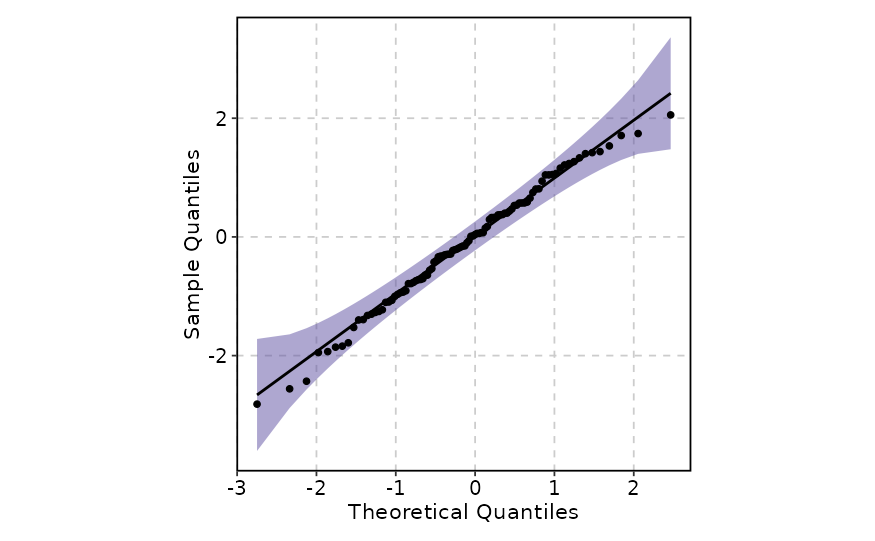
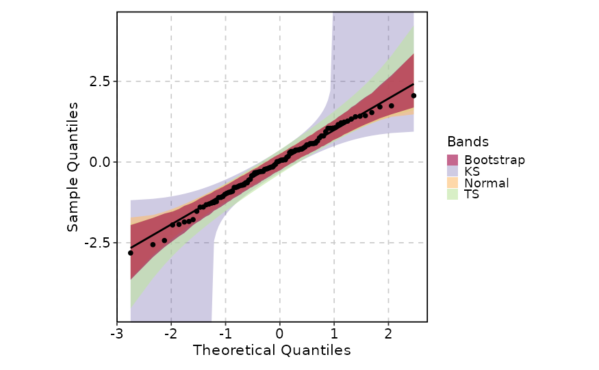
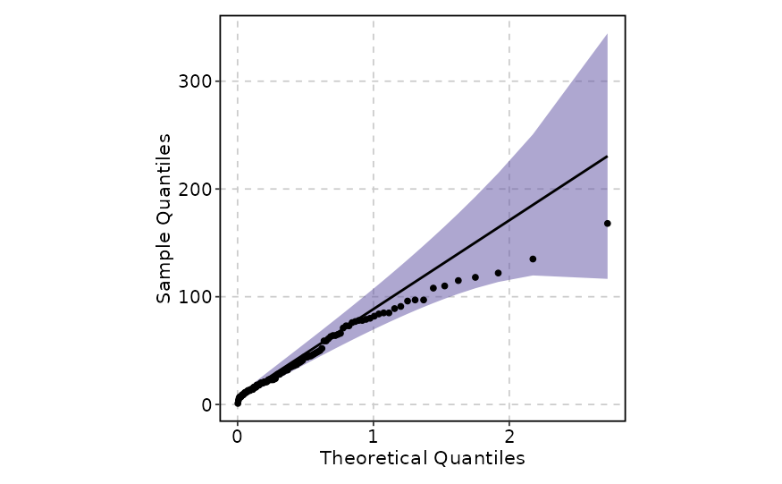
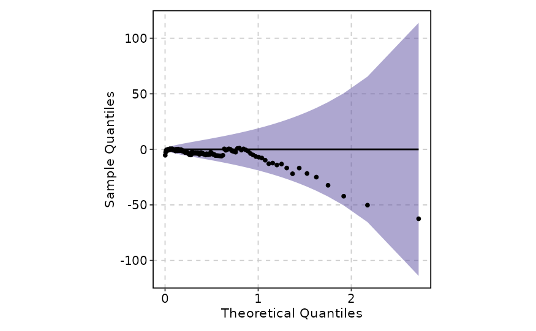
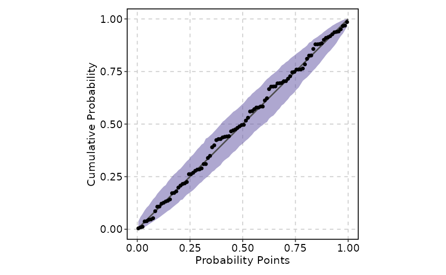
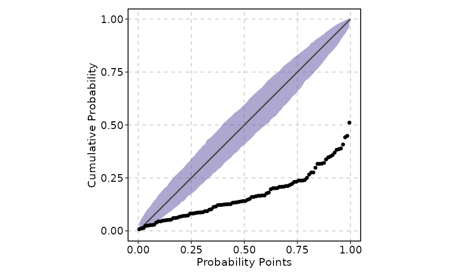
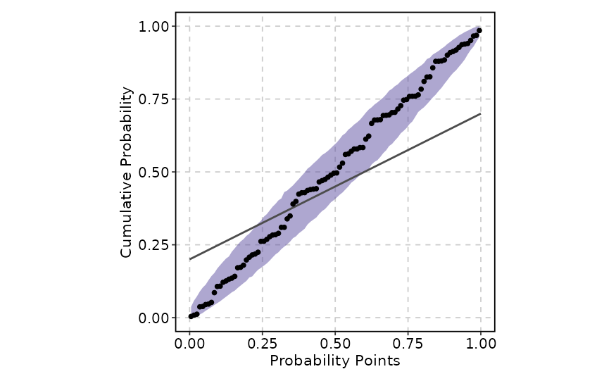
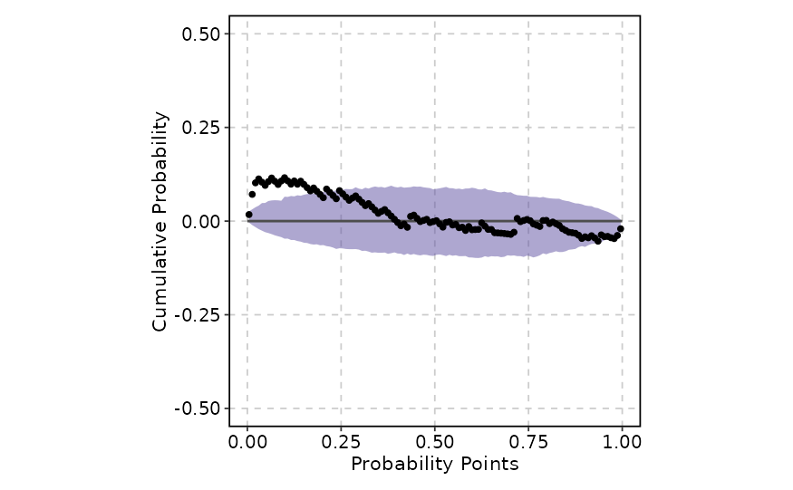

QQ plot is a graphical tool to compare two distributions by plotting their quantiles against each other.
Usage
QQPlot(
data,
val,
val_trans = NULL,
type = c("qq", "pp"),
split_by = NULL,
split_by_sep = "_",
band = NULL,
line = list(),
point = list(),
fill_name = "Bands",
band_alpha = 0.5,
theme = "theme_this",
theme_args = list(),
palette = "Spectral",
palcolor = NULL,
facet_by = NULL,
facet_scales = "fixed",
facet_ncol = NULL,
facet_nrow = NULL,
facet_byrow = TRUE,
aspect.ratio = 1,
legend.position = waiver(),
legend.direction = "vertical",
title = NULL,
subtitle = NULL,
xlim = NULL,
ylim = NULL,
xlab = ifelse(type == "qq", "Theoretical Quantiles", "Probability Points"),
ylab = ifelse(type == "qq", "Sample Quantiles", "Cumulative Probability"),
combine = TRUE,
nrow = NULL,
ncol = NULL,
byrow = TRUE,
seed = 8525,
axes = NULL,
axis_titles = axes,
guides = NULL,
design = NULL,
...
)Arguments
- data
A data frame.
- val
A character string of the column name for the values to plot. A numeric column is expected.
- val_trans
A function to transform the values before plotting. Default is NULL, which means no transformation.
- type
A character string to specify the type of plot. Default is "qq", which means QQ plot. Other options are "pp", which means PP plot.
- split_by
The column(s) to split data by and plot separately.
- split_by_sep
The separator for multiple split_by columns. See
split_by- band
A list of arguments to pass to
qqplotr::stat_qq_band()orqqplotr::stat_pp_band(), depending on the value oftype. Default is NULL, which means no band. If an empty list or TRUE is provided, the default arguments will be used. Multiple bands can be added by providing a list of lists.- line
A list of arguments to pass to
qqplotr::stat_qq_line()orqqplotr::stat_pp_line(), depending on the value oftype. Default islist(), which means to add a line with default arguments. IfNULLis provided, no line will be added.- point
A list of arguments to pass to
qqplotr::stat_qq_point()orqqplotr::stat_pp_point(), depending on the value oftype. Default islist(), which means to add points with default arguments. IfNULLis provided, no points will be added (not recommended).- fill_name
A character string to name the legend of fill. Default is "Band Type".
- band_alpha
A numeric value to set the alpha of all bands. Default is 0.5. It is a shortcut for setting alpha of all bands. You can override it by setting
alphainbandargument. For example,band = list(list(alpha = 0.3), list(alpha = 0.7)).- theme
A character string or a theme class (i.e. ggplot2::theme_classic) specifying the theme to use. Default is "theme_this".
- theme_args
A list of arguments to pass to the theme function.
- palette
A character string specifying the palette to use. A named list or vector can be used to specify the palettes for different
split_byvalues.- palcolor
A character string specifying the color to use in the palette. A named list can be used to specify the colors for different
split_byvalues. If some values are missing, the values from the palette will be used (palcolor will be NULL for those values).- facet_by
A character string specifying the column name of the data frame to facet the plot. Otherwise, the data will be split by
split_byand generate multiple plots and combine them into one usingpatchwork::wrap_plots- facet_scales
Whether to scale the axes of facets. Default is "fixed" Other options are "free", "free_x", "free_y". See
ggplot2::facet_wrap- facet_ncol
A numeric value specifying the number of columns in the facet. When facet_by is a single column and facet_wrap is used.
- facet_nrow
A numeric value specifying the number of rows in the facet. When facet_by is a single column and facet_wrap is used.
- facet_byrow
A logical value indicating whether to fill the plots by row. Default is TRUE.
- aspect.ratio
A numeric value specifying the aspect ratio of the plot.
- legend.position
A character string specifying the position of the legend. if
waiver(), for single groups, the legend will be "none", otherwise "right".- legend.direction
A character string specifying the direction of the legend.
- title
A character string specifying the title of the plot. A function can be used to generate the title based on the default title. This is useful when split_by is used and the title needs to be dynamic.
- subtitle
A character string specifying the subtitle of the plot.
- xlim
A numeric vector of length 2 to set the x-axis limits.
- ylim
A numeric vector of length 2 to set the y-axis limits.
- xlab
A character string specifying the x-axis label.
- ylab
A character string specifying the y-axis label.
- combine
Whether to combine the plots into one when facet is FALSE. Default is TRUE.
- nrow
A numeric value specifying the number of rows in the facet.
- ncol
A numeric value specifying the number of columns in the facet.
- byrow
A logical value indicating whether to fill the plots by row.
- seed
The random seed to use. Default is 8525.
- axes
A string specifying how axes should be treated. Passed to
patchwork::wrap_plots(). Only relevant whensplit_byis used andcombineis TRUE. Options are:'keep' will retain all axes in individual plots.
'collect' will remove duplicated axes when placed in the same run of rows or columns of the layout.
'collect_x' and 'collect_y' will remove duplicated x-axes in the columns or duplicated y-axes in the rows respectively.
- axis_titles
A string specifying how axis titltes should be treated. Passed to
patchwork::wrap_plots(). Only relevant whensplit_byis used andcombineis TRUE. Options are:'keep' will retain all axis titles in individual plots.
'collect' will remove duplicated titles in one direction and merge titles in the opposite direction.
'collect_x' and 'collect_y' control this for x-axis titles and y-axis titles respectively.
- guides
A string specifying how guides should be treated in the layout. Passed to
patchwork::wrap_plots(). Only relevant whensplit_byis used andcombineis TRUE. Options are:'collect' will collect guides below to the given nesting level, removing duplicates.
'keep' will stop collection at this level and let guides be placed alongside their plot.
'auto' will allow guides to be collected if a upper level tries, but place them alongside the plot if not.
- design
Specification of the location of areas in the layout, passed to
patchwork::wrap_plots(). Only relevant whensplit_byis used andcombineis TRUE. When specified,nrow,ncol, andbyroware ignored. Seepatchwork::wrap_plots()for more details.- ...
Additional arguments.
Examples
set.seed(8525)
data <- data.frame(norm = rnorm(100))
QQPlot(data, val = "norm", band = TRUE)

QQPlot(data, val = "norm", band = list(
list(bandType = "ks", mapping = ggplot2::aes(fill = "KS"), alpha = 0.3),
list(bandType = "ts", mapping = ggplot2::aes(fill = "TS")),
list(bandType = "pointwise", mapping = ggplot2::aes(fill = "Normal")),
list(bandType = "boot", mapping = ggplot2::aes(fill = "Bootstrap"))
), band_alpha = 0.6)

data(airquality, package = "datasets")
di <- "exp" # exponential distribution
dp <- list(rate = 2) # exponential rate parameter
QQPlot(airquality, val = "Ozone",
band = list(distribution = di, dparams = dp),
line = list(distribution = di, dparams = dp),
point = list(distribution = di, dparams = dp)
)

de <- TRUE # enabling the detrend option
QQPlot(airquality, val = "Ozone",
band = list(distribution = di, dparams = dp, detrend = de),
line = list(distribution = di, dparams = dp, detrend = de),
point = list(distribution = di, dparams = dp, detrend = de)
)

QQPlot(data, val = "norm", type = "pp", band = TRUE)

dp <- list(mean = 2, sd = 2) # shifted and rescaled Normal parameters
QQPlot(data, val = "norm", type = "pp",
band = list(dparams = dp),
point = list(dparams = dp))

QQPlot(data, val = "norm", type = "pp", band = TRUE,
line = list(ab = c(.2, .5)))

di <- "exp"
dp <- list(rate = .022) # value is based on some empirical tests
de <- TRUE
QQPlot(airquality, val = "Ozone", type = "pp",
band = list(distribution = di, detrend = de, dparams = dp),
line = list(detrend = de),
point = list(distribution = di, detrend = de, dparams = dp),
ylim = c(-.5, .5)
)
